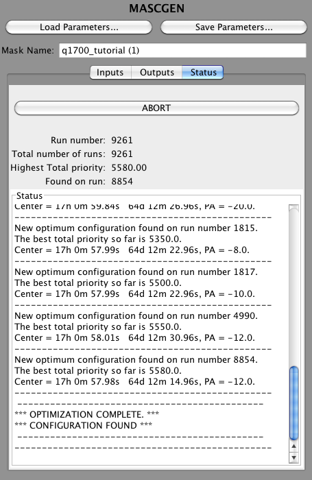

When the Run button is hit, it automatically switches to the Status tab (see below) to track the status of MASCGEN. The current run number and the total number of runs is displayed at the top, along with the current highest priority. The text box shows messages about the center position and position angle of the highest priority mask as it goes through the configurations in the parameter space.
When complete, the text box will show the message:
*** OPTIMAZATION COMPLETE ***
Followed by text indicating if a valid mask has been found or not. If a valid mask cannot be found, try adjusting the parameters of the search. Also, make sure there are enough alignment stars within the field to satisfy the Alignment Stars input. Setting this input argument to 0 can help determine if this is the problem; however, a mask with no or just a few alignment stars will be impossible to properly align when at the telescope, so be sure to find a valid configuration with at least 4 alignment stars.
